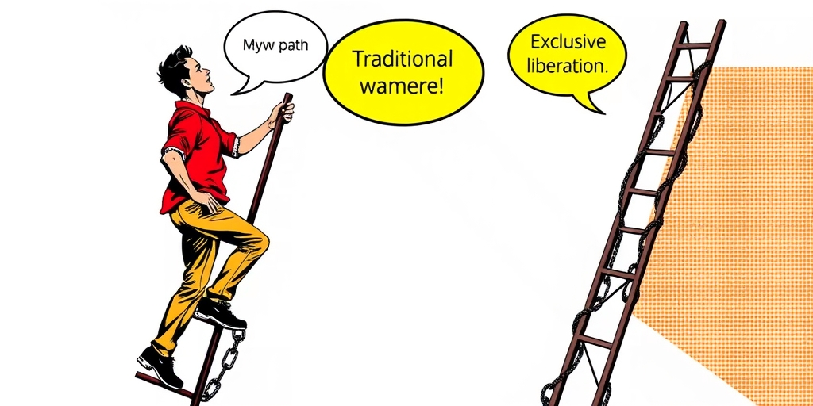
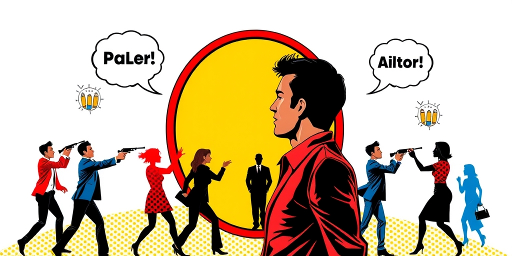

小汪老师的成长洞察 · 属于你的成长专栏
今年夏天，“散帅”这个词突然火了。乍看像自嘲，细想却是一记精准的回马枪——年轻男性把独立女性叙事那套成熟的话语工具，整个搬了过来，只换了一个主语。这不是流行语的偶然撞车，而是一场修辞学意义上的武器转让。
“散帅”这个词，第一次看到的人多半会愣一下。“散”字带点自嘲——男的就是一盘散沙，松散、不抱团；“帅”字又带着自我肯定，把“不结伴”的处境翻转成一种主动选择的独立姿态。把原本被视为劣势的状态，翻转成一种宣言，这种语义操作本身就很聪明。
但“散帅”真正厉害的地方不在词义，而在它的生产方式。它几乎是把这几年“独立女性”叙事的整套修辞工具箱原封不动地搬了过来，只换了一个主语。过去几年，独立女性叙事发展出了一整套成熟的修辞装置：自我赋权口号“你值得更好的”，身份标签“独立女性”“大女主”，社群暗号“姐妹们”“集美”，以及对传统角色的主动拒绝“不做贤妻良母”。这些语言模块经过反复使用和传播，已经深深嵌入了当代中文互联网的语感里。
“散帅”所做的，就是逐句替换主语后照搬：女性说“你值得更好的”，散帅说“我本身就很好”；女性说“姐妹先爱自己”，散帅说“兄弟先富养自己”；女性说“不做贤妻良母”，散帅说“不做供养者”。连句式的语感、节奏、断句方式都高度一致，唯一变的是代词。这种复制粘贴式的话语挪用在传播上极其高效——它不需要发明新的说服逻辑，只需要借用一套已经被验证过、被大众熟悉并接受的表达框架，替换掉主语和几个关键词。认知成本几乎为零，因为受众早就被训练熟悉了这套句式，理解和传播的门槛都被前人踩平了。更妙的是，这种挪用还自带一种挑衅效果：你用来武装自己的语言，我拿来武装我自己，而且用得一样顺溜。这比任何正面反驳都更能瓦解对方话语的排他性。
“散帅”不是凭空产生的情绪，它是几年前另一个更早的网络诊断——“力工”——的续集和翻转。“力工”这个词出现在大约三四年前，指的是那种极度传统的奋斗型男性：按部就班攒钱，把结婚生子买房当成人生唯一路径，把付出当成荣耀，舍不得为自己花一分钱。他们像工蚁一样勤恳，却从未想过自己为什么要这样活。这个标签之所以能刺痛人，是因为它不是骂人，是精准的画像。很多按传统路径生活的年轻男性第一次在这个词里看到了自己的全貌，那种“被说中了”的感觉本身就带有冲击力。
“力工”提出的是诊断：你正在把自己活成一台省吃俭用、最终为婚姻梭哈全部积蓄的机器。“散帅”提出的是处方：既然这台机器的投入产出比已经跌到负值，不如把资源撤回来，投给自己。这个处方背后有扎实的现实基础。结婚率从2013年的9.9‰一路降到2022年的4.8‰，彩礼争议在社交媒体上常年不散，一线城市房价收入比普遍超过30倍，而女性受教育程度和收入水平持续上升。这些因素共同压低了传统“供养者”角色对男性的实际回报率。
用投资的语言说：过去“娶妻生子买房”这条路径，对年轻男性而言曾经是一笔预期收益明确的投入——你付出劳动和积蓄，换来家庭、后代和社会认可。而现在，这笔投入的不确定性和风险都在上升。情感回报未必兑现，经济保障也未必稳固，甚至可能因为离婚而损失惨重。“散帅”本质上是对这笔“负期望值投资”的一次集体撤资——把原本要梭哈进婚姻的资源，转投一个收益更确定的标的：自己。健身、穿搭、旅行、爱好，这些消费看似“不务正业”，但它们带来的自我满足感和生活质量的提升，是立即可见、不需要依赖他人配合的。这种撤资行为在年轻男性中形成了一种新的身份认同，他们不再以“能扛能忍”为荣，而是以“对自己好”为荣。

这场“镜像战争”最富戏剧性的地方，是它意外证明了一个双方都不太想承认的事实：当年轻男性拿起独立女性发明的话语工具、用它来构建自己的独立叙事时，他们其实用行动验证了性别理论里一个很基础的判断——传统性别角色本身对两性都是束缚，不是只压迫一方、只解放另一方的单向结构。
“力工”被规训成不知疲倦的赚钱机器，“贤妻良母”被规训成任劳任怨的生育和持家工具。这两套规训看起来指向相反的性别，实际上出自同一套分工逻辑：把人简化为某种功能角色，再用道德话语（“责任”“荣耀”“贤惠”）把这种简化包装成美德。当年独立女性叙事拆解的，正是这套把“贤妻良母”塑造成美德的机制——她们说，这不是美德，是枷锁。今天“散帅”拆解的，是把“力工”塑造成美德的对应机制——他们说，这不是责任，是陷阱。工具相同，靶子不同，逻辑同源。
但这个同源性目前处于一种双方都不愿意点破的状态。使用“独立女性”话语的人未必愿意承认“散帅”和自己在做结构上相同的事情。因为承认这一点，等于承认自己发明的解放话语可以被完全对称地挪用到另一个性别身上，削弱了话语本身的排他性和“专属感”。这会让一些人觉得，自己好不容易争取来的话语武器，被别人“偷”走了。而“散帅”的使用者同样不太愿意承认自己的整套表达框架直接借用自女性主义话语的方法论。因为在当下的舆论场里，公开承认这一点意味着要面对一种身份上的尴尬：一边享用工具，一边否认工具的来源。如果承认了，就好像在说“我们连反抗的台词都要抄你们的”，这伤及自尊。于是场面变得有点滑稽：两边用着同一把梯子往上爬，却都坚持说自己搭的是另一架完全不同的梯子。

这种相互不承认，恰恰是这场“镜像战争”最耐人寻味的部分。修辞的复制暴露了处境的相似，而处境的相似又是双方都缺乏动力去承认的。于是战争继续，但战场上的每一枪，其实都打在了同一面墙上。
独立女性叙事最初的目标，是拆解那套把人变成功能角色的规训系统。当它被挪用到男性身上时，它依然在拆解同一套系统——只不过这次拆的是系统的另一面。如果双方都能抬头看一眼，也许会发现，他们瞄准的敌人从来都不是对方，而是那套把所有人都塞进固定角色、再用美德话语封住出口的旧脚本。这套脚本规定了男人该怎样活、女人该怎样活，谁越界就惩罚谁。
承认这一点需要一种罕见的坦诚：承认对手的武器和自己的武器来自同一个兵工厂，承认自己的痛苦和对方的痛苦是同一种结构的两种症状。在当下的舆论场里，这种坦诚比赢得一场嘴仗要难得多。但也许，这才是“散帅”这个词真正有价值的地方——它无意中暴露了战场的全貌。
写给你的话
或许这场修辞战争最大的讽刺在于：当男性用女性发明的话语为自己松绑时，他们无意间成了女性主义最忠实的学徒。而女性主义若拒绝承认这种挪用，就等于否认了自己工具的有效性。那么问题来了——到底是谁在害怕这套话语真的管用？如果一套解放工具真的能帮人挣脱枷锁，它应该被更多人使用，而不该被锁在某个性别的保险柜里。散帅的出现，也许不是对独立女性叙事的嘲讽，而是对它最意外的一次压力测试——测试它到底是一种专属特权，还是一种普适的解放方法。答案，可能比两边想象得都要刺人。
小汪老师的成长洞察 · 属于你的成长专栏